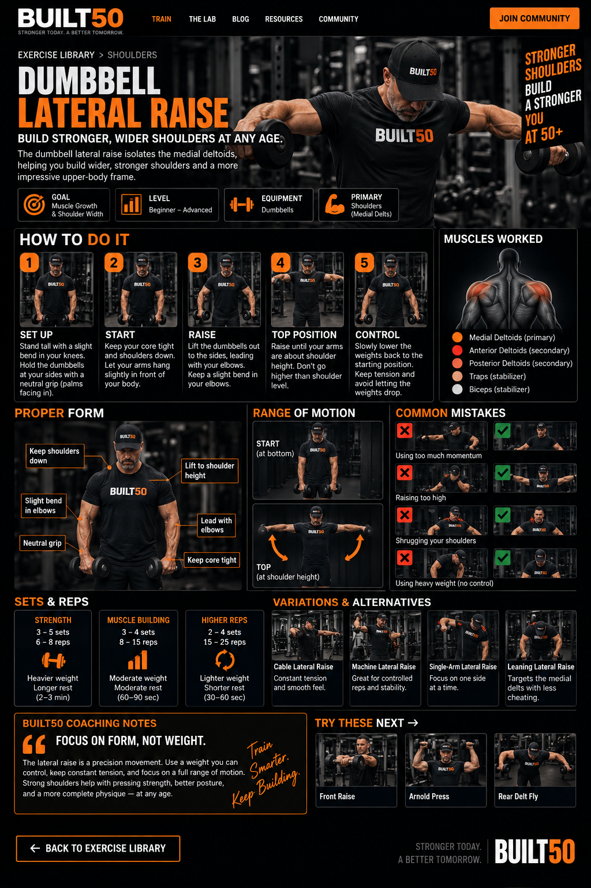

Dumbbell Lateral Raise Exercise Guide
The dumbbell lateral raise is a shoulder isolation exercise that primarily targets the medial deltoids and helps build wider, stronger-looking shoulders.
Dumbbell Lateral Raise Setup
Stand tall with the dumbbells at your sides, keep a slight bend in the elbows and brace your torso. Raise the dumbbells out to the sides with control until the arms are around shoulder height, then lower them slowly back to the starting position.
Muscles Worked
- Medial deltoids — primary muscle
- Anterior deltoids — secondary involvement
- Posterior deltoids — secondary involvement
- Traps — stabilization
Common Lateral Raise Mistakes
Common mistakes include using too much momentum, shrugging the shoulders, choosing weights that are too heavy, raising the arms excessively high and turning the movement into a full-body swing instead of a controlled shoulder exercise.
Dumbbell Lateral Raise Sets and Reps
Moderate and higher-repetition sets are commonly used because the lateral raise responds well to controlled repetitions and consistent tension. Keep the movement clean before increasing the load.
Lateral Raise Variations
Useful alternatives include cable lateral raises, machine lateral raises, single-arm lateral raises and leaning lateral raises. Different versions can change the resistance curve while keeping the focus on the medial deltoids.